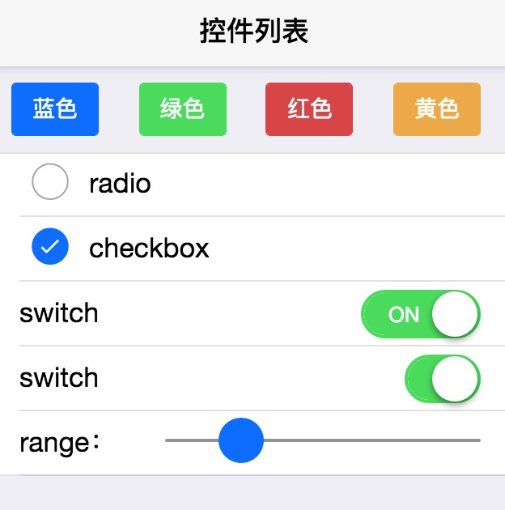

-
jQuery
jQuery是一个快速、简洁的JavaScript框架，是继Prototype之后又一个优秀的JavaScript代码库（或JavaScript框架）。 jQuery设计的宗旨是“write Less，Do More”，即倡导写更少的代码，做更多的事情。 它封装JavaScript常用的功能代码，提供一种简便的JavaScript设计模式，优化HTML文档操作、事件处理、动画设计和Ajax交互。
jQuery的核心特性可以总结为：具有独特的链式语法和短小清晰的多功能接口；具有高效灵活的css选择器，并且可对CSS选择器进行扩展；拥有便捷的插件扩展机制和丰富的插件。 jQuery兼容各种主流浏览器，如IE 6.0+、FF 1.5+、Safari 2.0+、Opera 9.0+等。
-
jQuery Mobile
jQuery Mobile是jQuery 框架的一个组件（而非jquery的移动版本）。 jQuery Mobile 不仅会给主流移动平台带来jQuery核心库，而且会发布一个完整统一的jQuery移动UI框架。 支持全球主流的移动平台。jQuery Mobile开发团队说：能开发这个项目，我们非常兴奋。 移动Web太需要一个跨浏览器的框架，让开发人员开发出真正的移动Web网站。
-
AngularJS
AngularJS诞生于2009年，由Misko Hevery 等人创建，后为Google所收购。 是一款优秀的前端JS框架，已经被用于Google的多款产品当中。 AngularJS有着诸多特性，最为核心的是：MVC、模块化、自动化双向数据绑定、语义化标签、依赖注入等等。
AngularJS试图成为WEB应用中的一种客户端的解决方案。 这意味着它不只是你的WEB应用中的一个小部分，还是一个完整的客户端的解决方案。 这会让AngularJS在构建一个CRUD（增加Create、查询Retrieve、更新Update、删除Delete）的应用时显得很“固执”（原文为 opinionated,意指没有太多的其他方式）。 但是，尽管它很“固执”，它仍然能确保它的“固执”只是在你构建应用的起点，并且你仍能灵活变动。 AngularJS的一些出众之处如下：
构建一个CRUD应用可能用到的全部内容包括：数据绑定、基本模板标识符、表单验证、路由、深度链接、组件重用、依赖注入。
测试方面包括：单元测试、端对端测试、模拟和自动化测试框架。
具有目录布局和测试脚本的种子应用作为起点。
-
Bootstrap
Bootstrap，来自 Twitter，是目前很受欢迎的前端框架。 Bootstrap 是基于 HTML、CSS、JAVASCRIPT 的，它简洁灵活，使得 Web 开发更加快捷。 它由Twitter的设计师Mark Otto和Jacob Thornton合作开发，是一个CSS/HTML框架。 Bootstrap提供了优雅的HTML和CSS规范，它即是由动态CSS语言Less写成。 Bootstrap一经推出后颇受欢迎，一直是GitHub上的热门开源项目，包括NASA的MSNBC（微软全国广播公司）的Breaking News都使用了该项目。 国内一些移动开发者较为熟悉的框架，如WeX5前端开源框架等，也是基于Bootstrap源码进行性能优化而来。
-
ReactJS
React 起源于 Facebook 的内部项目，因为该公司对市场上所有 JavaScript MVC 框架，都不满意，就决定自己写一套，用来架设 Instagram 的网站。 做出来以后，发现这套东西很好用，就在2013年5月开源了。由于 React 的设计思想极其独特，属于革命性创新，性能出众，代码逻辑却非常简单。 所以，越来越多的人开始关注和使用，认为它可能是将来 Web 开发的主流工具。
-
nodeJS
Node.js是一个Javascript运行环境(runtime)。 实际上它是对Google V8引擎进行了封装。V8引 擎执行Javascript的速度非常快，性能非常好。 Node.js对一些特殊用例进行了优化，提供了替代的API，使得V8在非浏览器环境下运行得更好。
-
MooTools
MooTools是一个简洁，模块化，面向对象的开源JavaScript web应用框架。 它为web开发者提供了一个跨浏览器js解决方案,同时还提供了一个比普通js更面向对象的documentAPI。
优点：1.灵活，模块化的框架，用户可以选择自己需要的组件。
2.MooTools符合OO的思想，使代码更强壮，有力，有效。
3.高效的组件机制,可以和flash进行完美的交互。
4.对于DOM的扩展增强，使开发者更好的利用document。
-
Dojo
Dojo是一个用javascript语言实现的开源DHTML工具包。它是在几个项目捐助基础上建立起来的(nWidgets,Burstlib,f(m)),这也是为什么叫它a"unified"toolkit的原因。 Dojo的目标是解决开发DHTML应用程序遇到的那些，长期存在、历史问题(historical problems with DHTML)、跨浏览器问题。
Dojo能够让你更容易使Web页面具有动态能力，或者在任何能够稳定支持JavaScript语言的环境中发挥作用。
-
MUI
轻量
追求性能体验，是我们开始启动MUI项目的首要目标，轻量必然是重要特征；
MUI不依赖任何第三方JS库，压缩后的JS和CSS文件仅有100+K和60+K。
原生UI鉴于之前的很多前端框架（特别是响应式布局的框架），UI控件看起来太像网页，没有原生感觉，因此追求原生UI感觉也是我们的重要目标。
MUI以iOS平台UI为基础，补充部分Android平台特有的UI控件。
 流畅体验......


框架列表